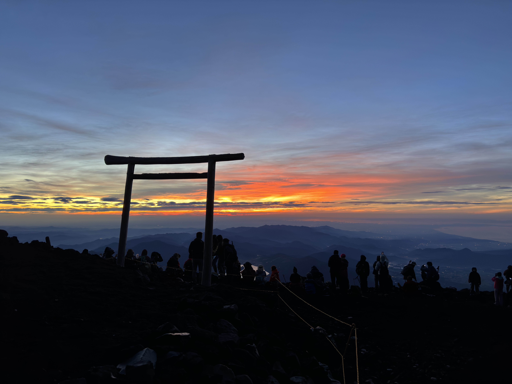

Adventure
To live is to explore the unspoken - across lands, through hearts, and within the deep wilds of the self.
Story written by Synchronicity
The world is constituted by Deception and Lies, and visions and values are interpreted through Faith and Belief.
"Synchronicity between us colors the storybook of the world. Our shared moments and crossings write invisible chapters across the firmament of the sky. Through travel, trail, and adventure, I follow these threads — where souls meet, and meaning forms."Explore My Gallery

Hiking
In the mist-veiled wilderness, I feel the existence of the world, and the pulse of my soul and will.
Travel
Wandering through the Otherworld, I magnify the rainbow hidden within gaze.
Photography
In confrontation with the cruelty of time, I strive powerlessly - yet earnestly - to grasp the fleeting instant of synchronicity.